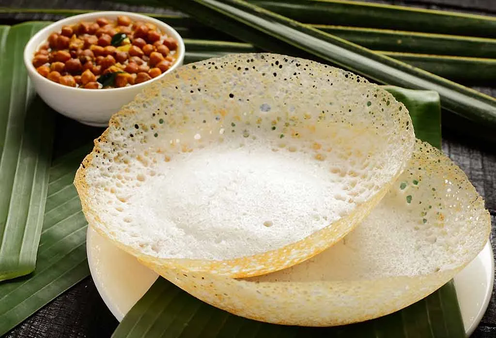

Appam Tamil: ஆப்பம் is a type of pancake, originating from South India, made with fermented rice batter and coconut milk, common in Kerala, India. It is eaten most frequently for breakfast or dinner. It is usually made using raw rice, coconut milk, coconut, yeast, sugar and cooked rice. The appam batter is poured in a special chatti and cooked covered till soft and spongy. Appam is usually served with curries, chicken or mutton stew, veg curries, veg kurmas or even sweetened coconut milk. 
Raw rice is added in the making of appam because it helps with the texture of appam. Regular rice won't give the proper texture to the appam. Raw rice is soaked for few hours and ground till smooth. Urad dal helps in fermentation of the batter and makes it soft. Sugar is added in appam batter which helps in the fermentation of the batter. It adds sweetness to the appam batter which makes it more tasty. Cooking rice batter helps with the fermentation and make the appam soft.
Soaking, Take raw rice, urad dal in a bowl and wash well. Soak in water for 4 hours. Grinding Batter: Strain the rice and urad dal and take it in a blender. Add in cooked rice and blend till smooth. Once the batter is ground. Take it in a bowl. Now take the blender jar, add 1 cup of water to it. Swirl and clean the blender really well. Take the mix in the sauce pan. Cook on high heat and keep mixing till it thickens well. Set aside to cool completely. fermentation:Once the mix is cooled. Add it in to the batter. Add salt and mix well. Cover and leave to ferment for 24 hours. Once the batter is fermented. It will look foamy and bubbly. Cooking Appam: Heat appam pan, pour a ladleful of batter and swirl. Cover and cook till the bottom is crispy. Remove and serve.
South Indian Food| First Name | Second Name | ID number |
|---|---|---|
| Mariana | Scott | 12344 |
| Abraham | Khan | 4567 |
| Stephen | Robert | 89700 |